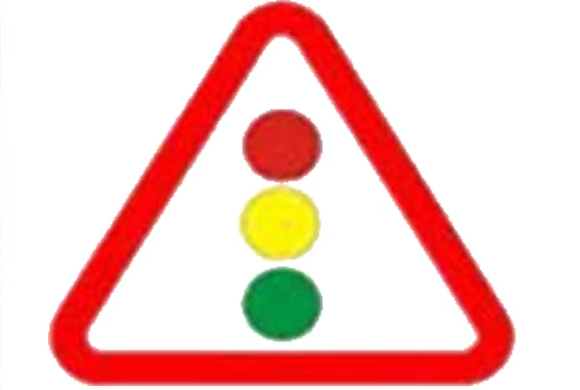
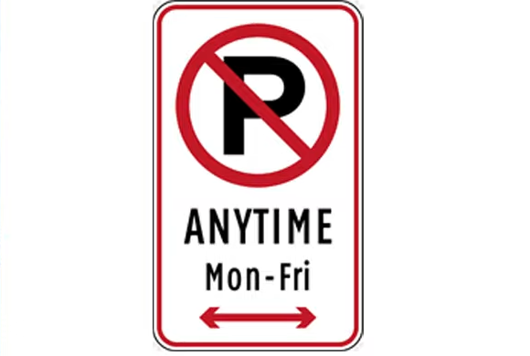
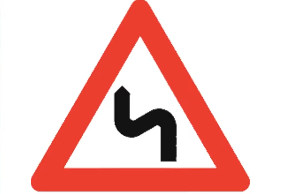

Pick how you want to review
Two parts, full coverage
Real sign photos included
Cropped from the reviewer videos so you study the exact images.



Why it works
- ✅ Correct answers verified from the reviewer videos
- 🎯 40 / 60 / 100-question sets or the full 120
- 🔁 Shuffle + fresh random sets every session
- ❌ Mistakes-only mode for focused review
- 💾 Progress auto-saved on your device
- 📱 Mobile-friendly card layout with keyboard shortcuts